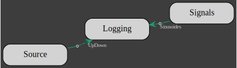

Signals & Logger
In the following, we will introduce the signals, Source, Logging and Timer clients.
Both Signals and Source are signals generators and
both are multi-channels with a single multiplexed output.
The signals generated with Signals are either a constant, a sinusoide, a ramp, a sinusoide or white-noise. For example, here is an Actor which client is a 2 channels Signals, each channel with the same sinusoide but out-of-phase:
let n_step = 9;
let mut signals: Initiator<_> = Signals::new(2, n_step)
.channel(
0,
Signal::Sinusoid {
amplitude: 1f64,
sampling_frequency_hz: (n_step - 1) as f64,
frequency_hz: 1f64,
phase_s: 0f64,
},
)
.channel(
1,
Signal::Sinusoid {
amplitude: 1f64,
sampling_frequency_hz: (n_step - 1) as f64,
frequency_hz: 1f64,
phase_s: 0.5f64,
},
)
.into();Source signals are user provided, the multiplexed channels are given as a single flatten vector argument:
let mut source: Initiator<_> = Source::new(
(0..n_step)
.flat_map(|x| vec![x as f64, (n_step - x - 1) as f64]) // 2 channels
.collect(),
2,
)
.into();The Logging client simply accumulates all its inputs into a single vector. Logging requires all inputs signals to be of the same type.
An actor for a Logging client with entries for both the Signals and Source clients is declared with
let logging = Logging::<f64>::new(2).into_arcx();
let mut logger = Terminator::<_>::new(logging.clone());Building a Model out of the 3 actors:
#[derive(UID)]
enum Sinusoides {}
#[derive(UID)]
enum UpDown {}
signals
.add_output()
.unbounded()
.build::<Sinusoides>()
.into_input(&mut logger)?;
source
.add_output()
.unbounded()
.build::<UpDown>()
.into_input(&mut logger)?;
model!(signals, source, logger)
.name("signals-logger")
.flowchart()
.check()?
.run()
.await?;gives (the dashed lines representing the "unbounded" inputs):

and the following data has been logged:
println!("Logs:");
(*logging.lock().await)
.chunks()
.enumerate()
.for_each(|(i, x)| println!("{}: {:+.3?}", i, x));
The Timer client does not generate a new signal instead it adds a beat to the model and takes as input argument a number of beat.
A Model with a timer will terminate after the last beat.
Lets update the previous Model with a timer which number of beat is half the number of sample that the signals clients are set to generate:
let mut timer: Initiator<_> = Timer::new(n_step / 2).into();The signals and source clients are modified to accept the timer input:
let mut signals: Actor<_> = Signals::new(2, n_step)
.channel(
0,
Signal::Sinusoid {
amplitude: 1f64,
sampling_frequency_hz: (n_step - 1) as f64,
frequency_hz: 1f64,
phase_s: 0f64,
},
)
.channel(
1,
Signal::Sinusoid {
amplitude: 1f64,
sampling_frequency_hz: (n_step - 1) as f64,
frequency_hz: 1f64,
phase_s: 0.5f64,
},
)
.into();
let mut source: Actor<_> = Source::new(
(0..n_step)
.flat_map(|x| vec![x as f64, (n_step - x - 1) as f64])
.collect(),
2,
)
.into();logger remains the same and the timer is connected to both signals and source:
timer
.add_output()
.multiplex(2)
.build::<Tick>()
.into_input(&mut signals)
.into_input(&mut source)?;
signals
.add_output()
.unbounded()
.build::<Sinusoides>()
.into_input(&mut logger)?;
source
.add_output()
.unbounded()
.build::<UpDown>()
.into_input(&mut logger)?;Note that for a client to allow Timer as input, it must implement the TimerMarker trait.
The new model looks like this:
model!(timer, signals, source, logger)
.name("signals-logger-trunc")
.flowchart()
.check()?
.run()
.await?;
and the following data has been logged:
println!("Logs:");
(*logging.lock().await)
.chunks()
.enumerate()
.for_each(|(i, x)| println!("{}: {:+.3?}", i, x));